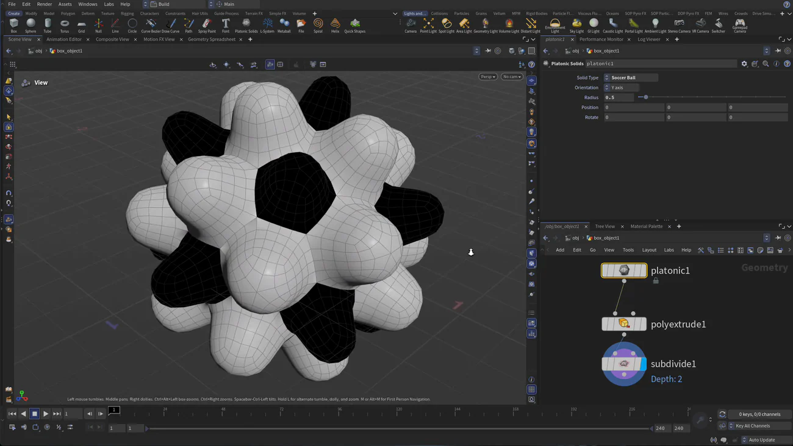

Houdini 22 入門 1 — 上流を差し替えてサッカーボールを作る
出典: H22 Foundations | Model Render Animate 1 | Create a Soccerball （SideFX 公式チュートリアル H22 Foundations: Model, Render, Animate の第1回 / Houdini 22 / 5:49 / 英語）。 このページは、上記の動画を見ながら自分用にまとめた日本語の学習メモです。SideFX 公式の翻訳ではありません。 シリーズ全体の構成は第0回のメモにまとめています。
この回で扱うこと
- 作業を始める前に Set Project でプロジェクトを決めておくと、以降の保存先とテクスチャの参照が楽になること
- ビューポート・パラメータ・ネットワークビューの3つのペインと、オブジェクトレベルとジオメトリレベルの行き来
- ビュー操作のホットキー。とくにスペースキーを押している間だけビューツールになる使い方
- Poly Extrude を面ごとに独立させて押し出す設定
- この回のいちばん大事なところ — できあがったネットワークの上流だけを別のノードに差し替えると、下流の処理がそのまま新しい形に効くこと
1. プロジェクトを決めてから保存する
いきなりモデリングを始めたくなるところですが、先に File > Set Project でプロジェクトディレクトリを指定します。
ここを決めておくと、このあと File > Save As したときに最初から正しい場所が開くので、ファイルが散らばらずに済みます。
動画ではレッスンファイルを置いたディレクトリを選んで Accept を押し、そのまま soccerball_01 として保存しています。
地味な工程ですが、ここで $HIP（hip ファイルのあるディレクトリ）が確定します。
レッスン5でテクスチャを $HIP/tex/… と書けるのはこのおかげなので、飛ばさないほうが後が楽だと思います。
この時点でレッスンファイルの中身はテクスチャのディレクトリだけですが、この回で必要なのはそれだけです。
2. 3つのペインと、2つの階層
触るペインは3つです。ビューポートで形を見て触り、パラメータでノードの数値を詰め、 ネットワークビューでノードを繋いでいきます。
ここで一度つまずきやすいのが階層です。C で Create > Geometry > Box を出して Enter で原点に置くと、
ネットワークビューにノードが1つ現れますが、このとき見えているパラメータはオブジェクトレベルの変換です。
ダブルクリックで中に入ると、そこに箱の形そのものを持つ別のノードがあって、こちらには別のパラメータが並んでいます。
同じ「箱」に見えて、外側と中身で持ち物が違うという作りになっています。
覚えておくと楽な操作
| やりたいこと | 操作 |
|---|---|
| 中（ジオメトリレベル）に入る | ノードをダブルクリック、またはオブジェクトを選んで I |
| 外（オブジェクトレベル）に戻る | パス表示の上位をクリック |
| ビューツールに切り替える | Esc |
| 別のツール中に一時的にビューを動かす | スペースを押したまま左／中／右ドラッグ |
| 見たいものに寄る | スペース → G |
| 選択ツール | S（右クリックで点／エッジ／プリミティブを切り替え） |
| 全部選ぶ | N（ジオメトリをダブルクリックでも同じ） |
ビューポートでは左ドラッグでタンブル、中ドラッグでトラック、右ドラッグでドリーです。
ネットワークビューは中ドラッグでパン、右ドラッグでズームになります。
移動ツールなどが入っているときにビューを動かそうとするとモデルが動いてしまうので、
そこだけ スペース を押しながら操作するのがコツです。
3. 押し出して細分化する
Sで選択ツールにして、右クリックからプリミティブ選択にします（動画では最初からプリミティブでした）。Nで面を全部選びます。C→ Model > Polygons > Poly Extrude でハンドルを引き出します。- このままだと全部が繋がったまま同じだけ動くので、面ごとに独立させます。
- もう一度
Nで全選択し、Tabから Subdivide を足して Depth を2にします。
4番目が要点です。ビューポート上部の操作ツールバーからも切り替えられますが、 ノード側の Divide Into パラメータが同じものです。
| ノード | パラメータ | この回の値 |
|---|---|---|
| Poly Extrude polyextrude::2.0 |
splittype — Divide Into |
Individual Elements。既定の Connected Components だと、隣り合った面がひとつの塊として扱われます |
| Subdivide subdivide |
iterations — Depth |
2。ラベルは Depth ですが、内部名は iterations です |
ここで動画は箱のサイズを決め忘れていたことに気づいて、上流の箱のノードに戻って
Shift を押しながらサイズを変えます。すると押し出しも細分化も付いてきます。
下流を作り直さなくていいというのが、この後ずっと効いてくる性質です。
上流のノードを選んでも表示は下流のまま（ワイヤーフレームが重なって見える状態）なので、 下流の結果を見ながら上流の数値を触れます。
4. 上流を差し替える — ここがこの回の山場
サッカーボールを作るのに、箱から始める必要はありませんでした。
シェルフの Platonic Solids をネットワークビューに直接ドラッグして（Tab からでも同じです）、
箱の代わりに繋ぎ替えます。箱はもう要らないので消してしまえます。
Platonic Solids の既定は正四面体なので、Solid Type を Soccer Ball に変えます。 この時点ではまだサッカーボールには見えませんが、押し出しと細分化はそのまま効いています。 あとは Poly Extrude に戻って押し出し量を下げていくと、それらしい形になっていきます。

押し出し量を下げる前なので、面がぼこぼこに膨らんでいます。
ネットワークは platonic1 → polyextrude1 → subdivide1 の3つだけです。
| パラメータ | 既定 | この回 |
|---|---|---|
type — Solid Type | Tetrahedron | Soccer Ball |
orient — Orientation | — | Y axis |
radius — Radius | 1 | 0.5 |
ひとつ気をつけたいのは、差し替え自体はうまくいっても押し出し量は前の形に合わせた値のままだということです。 形が崩れて見えたらノードの繋ぎ方を疑うより先に、Poly Extrude に戻って数値を詰め直すほうが早いと思います。
最後に subdivide1 を選んでスムーズシェーディングで見ると、ボールの形が確認できます。
ただ、この段階のものは動画の言い方だと「ビーチで買うようなプラスチックのボール」で、
革のボールにするのは次の回からになります。
この回のまとめ
- 先に Set Project をやっておくと
$HIPが決まり、後のテクスチャ参照が素直に書けます - オブジェクトレベルは変換とレンダー設定、ジオメトリレベルが形です。パラメータが想像と違うときはまずここを疑うとよさそうです
- Poly Extrude の
splittype（Divide Into）を Individual Elements にしないと、全体がひとつの塊として膨らみます - Subdivide の Depth は 3 以上にしないほうが無難です。公式ヘルプにも「高い値は避けて必要な場所にだけ足す」と書かれています
- 上流のノードは後から差し替えられます。箱で組んだ押し出しと細分化が、Platonic Solids に繋ぎ替えてもそのまま効きます
次の第2回はこのコースの山場で、Ray で真円にしてから
patches というアトリビュートを自分で作り、For-Each ループでパッチ単位に押し出していきます。